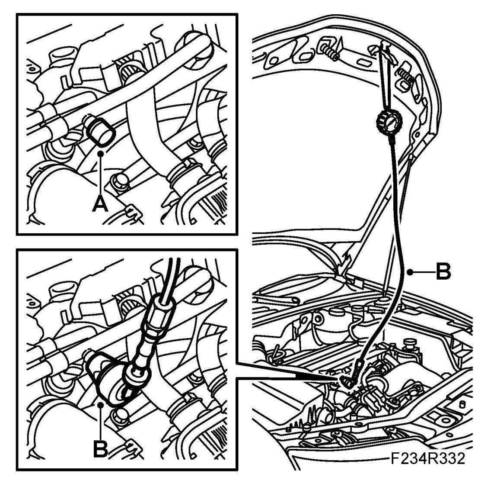
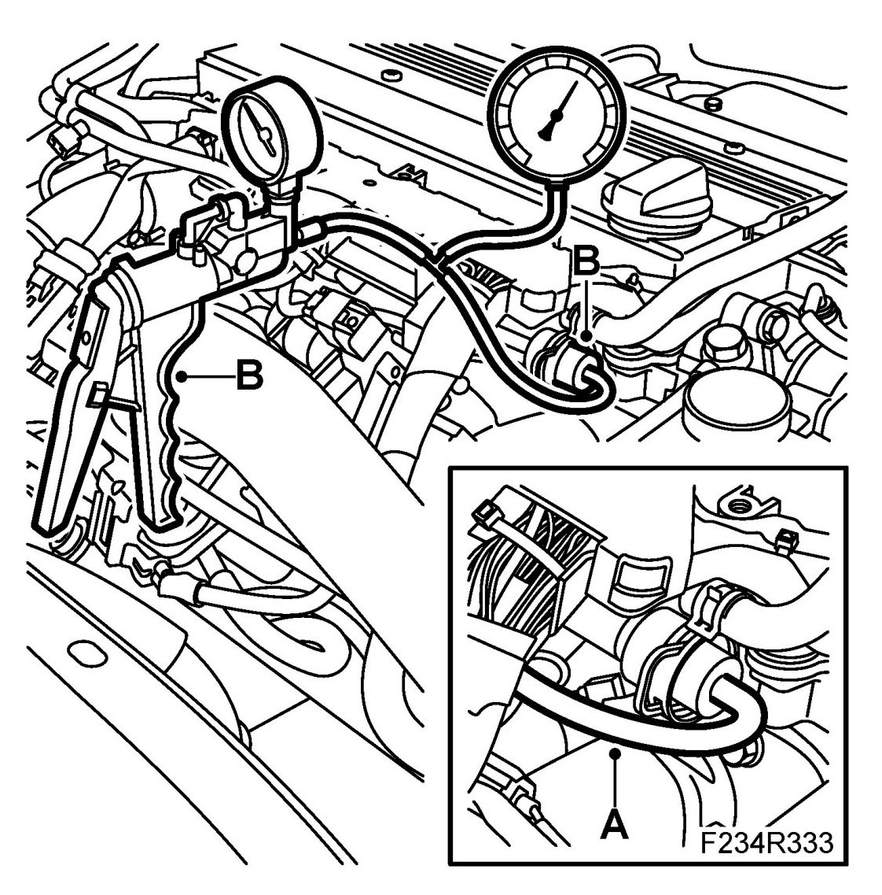
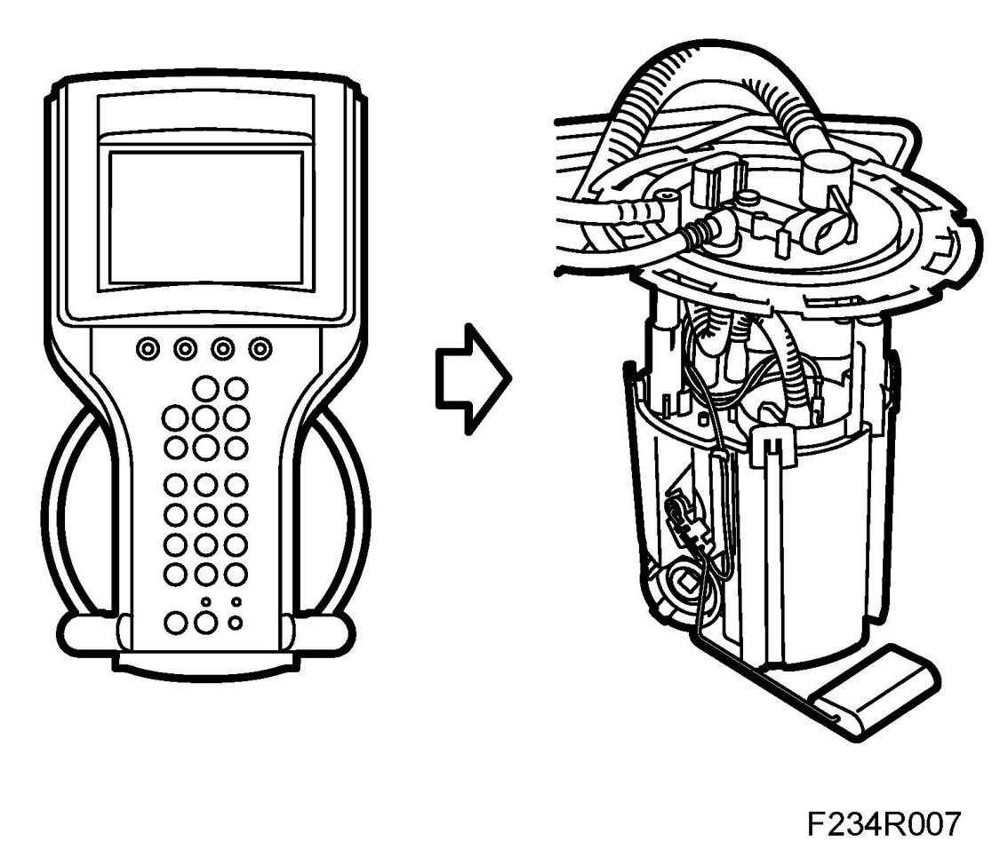

Fuel Pressure Regulator: Testing and Inspection
Checking The Fuel Pressure Regulator
WARNING:
Removal of the fuel pressure regulator is a procedure involving the car's fuel system. It is therefore necessary to observe the following precautions in conjunction with the procedure:
- Ensure good ventilation. If there is approved ventilation for extraction of fuel fumes then this must be used.
- Wear protective gloves. Prolonged exposure of the hands to fuel can cause irritation of the skin.
- Have a fire extinguisher class BE at hand. Be aware of the risk for sparks, i.e. in connection with circuit breaking, short-circuiting, etc.
- Absolutely no smoking.
- Use protective goggles.
Checks
1. Unscrew the valve cap (A). Connect 83 93 852 Pressure measuring equipment, fuel and oil and the adapter (B) 83 94 744 Adapter, fuel pressure gauge. Connect the adapter with "safety on" to the fuel rail. "Safety off" the adapter.

2. Detach the vacuum hose from the pressure regulator (A) and connect pressure/vacuum pump (B), 30 14 883 Pressure/vacuum pump , and charge pressure meter (B), 83 93 514 Charge pressure meter.

3. Start the fuel pump using the diagnostics tool.

4. Check the reading at atmospheric pressure. The reading should be 3 bar (43 psi).
5. Increase the vacuum in the pressure regulator by means of the pressure/vacuum pump. System pressure should drop by the same amount as indicated on the pressure gauge.
6. Pump up the pressure in the pressure regulator with the vacuum pump. The system pressure should now increase with the same amount as the reading on the pressure gauge.
7. Switch off the fuel pump using the diagnostics tool.
8. "Safety on" the adapter and remove the pressure measuring equipment from the service nipple. Collect any fuel spill with a rag.
9. Remove the gauges and adapters; reconnect the hose to the fuel pressure regulator.